MS Mechanical Engineering student at Stanford University · Double degree with Arts et Métiers Institute of Technology
Path finding, control and perception for an autonomous robot (70 hrs, ongoing)
Stanford University – AA Department · Sept–Dec 2026 · Under the supervision of Prof. S. Bansal
This project is part of the Principles of Robot Autonomy I course at Stanford. It covers the three questions an autonomous robot has to answer: where to go (planning), how to get there (control) and what is around it (perception).
Path finding and path optimization
The goal is to make a mobile robot (a TurtleBot running on ROS) go from a start point to a goal point in an environment full of obstacles, without hitting any of them and with the best possible trajectory. I coded two families of planners in Python: a grid-based one (A*) and a sampling-based one (RRT), and then I worked on the optimization of the paths they give.
A* path finding
A* explores a grid from the start point and always expands first the node that seems the closest to the goal. I implemented it on an 8-connected grid (the robot can move straight or in diagonal).
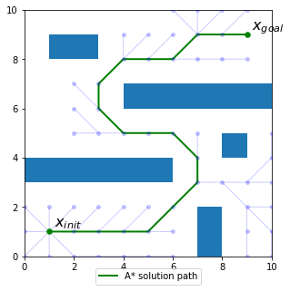
A* path in the simple environment
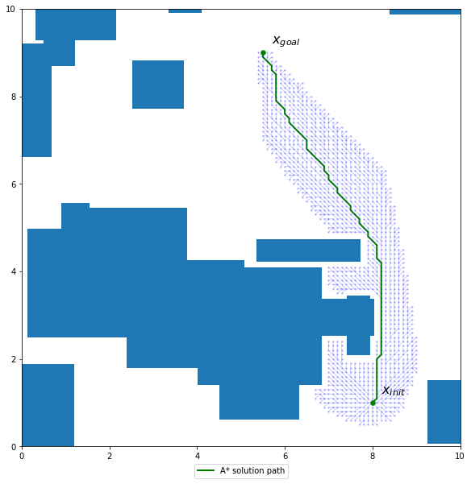
A* path in a random cluttered environment
In the simple environment, the path found is the shortest one possible with this grid. In the cluttered environment, we can see that the whole grid was not explored (the light dots are the explored nodes): the algorithm only spends time in the direction of the goal, and the path still seems to be the fastest one.
Path smoothing
The A* path is made of straight segments with sharp angles, which a real robot cannot follow properly. I smoothed it with a cubic spline, for a desired speed of 0.15 m/s and a smoothing parameter α = 0.1.
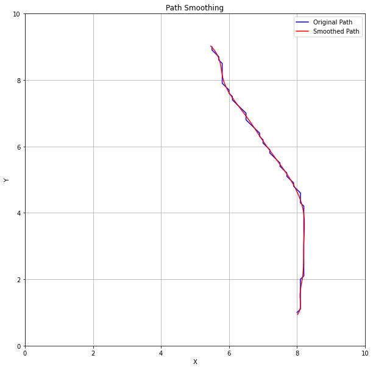
A* path (blue) and cubic-spline smoothed path (red)
The smoothed path gives a better trajectory while being even a bit shorter in this case. However, the smoothing has to stay reasonable: the bigger α is, the more the spline is allowed to move away from the nodes. It can then cut corners, miss the start point or the goal point, or even hit an obstacle, as no collision check is run on the smoothed path.
Choosing the heuristic
The heuristic is the way A* estimates the remaining distance to the goal. I compared three of them, and a weighted version where the heuristic counts three times more (w = 3).
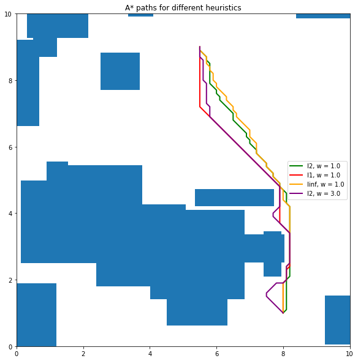
A* paths for the different heuristics in the same environment
Heuristic
Weight w
Path length
Nodes expanded
Euclidean (L2)
1.0
9.201
1,091
Manhattan (L1)
1.0
9.201
318
Chebyshev (L∞)
1.0
9.201
1,965
Euclidean (L2)
3.0
9.898
146
With w = 1, the three heuristics find a path of the same length, but not with the same effort: the closer the heuristic is to the true remaining distance, the fewer nodes are needed (318 for L1 against 1,965 for L∞). With w = 3, the path is 7.6% longer but the algorithm expands 7.5 times fewer nodes than with w = 1. It is a trade-off between the quality of the path and the computation time, which matters on an embedded computer.
RRT and shortcutting
The Rapidly-exploring Random Tree (RRT) does not use a grid: it grows a tree by picking random points in the free space until one branch reaches the goal. The path it finds is good but not optimal, so I added a shortcutting step which removes the useless detours.
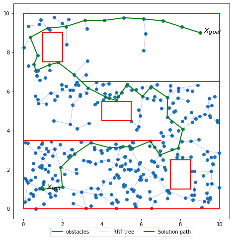
RRT tree and solution path
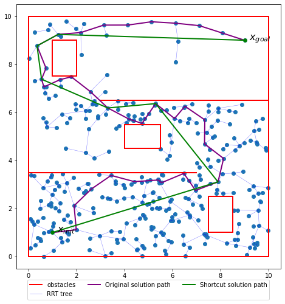
Path before (purple) and after (green) shortcutting
The shortcutting gives a clearly shorter path. It would be interesting to apply the smoothing algorithm to it afterward!
Goal bias
With a probability p, the tree tries to grow directly toward the goal instead of toward a random point. I ran 20 trials for each value of p, with at most 2,000 iterations.
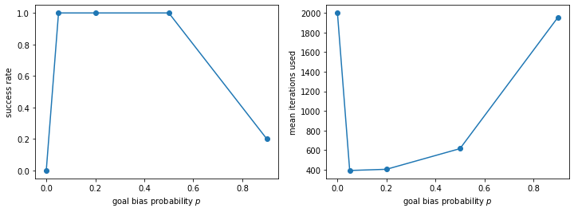
Success rate (left) and mean number of iterations (right) for each goal bias p
Goal bias p
Success rate
Mean iterations
0.00
0%
2,000.0
0.05
100%
391.9
0.20
100%
404.2
0.50
100%
615.1
0.90
20%
1,956.7
The best value seems to be near p = 0.05. With p = 0, no direction is prioritized, so it is very unlikely to reach the goal only with randomness. On the opposite, with p = 0.9 the tree nearly only tries to go straight to the goal and has very few chances to explore the other directions needed to go around the obstacles, which explains the 20% success rate.
Trajectory optimization and control of a drone in the wind
Once a path is found, the robot still has to follow it. In this second part, I computed optimal trajectories by solving an optimization problem, and then I designed a controller (LQR) that keeps a planar quadrotor on its nominal trajectory despite a strong wind.
Trajectory optimization
A unicycle robot has to go from (0, 0) to (5, 5) while avoiding a circular obstacle. I discretized the trajectory in N steps and wrote it as a nonlinear program: the decision variables are the final time, the states and the controls, the cost is ∫(α + v² + ω²)dt, and the dynamics, the obstacle and the speed limits are constraints. The parameter α sets the trade-off between going fast (time cost) and saving energy.
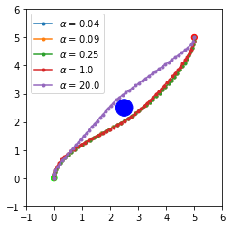
Optimal trajectories for α ∈ {0.04, 0.09, 0.25, 1, 20}
On a straight line, the cost is minimized for v* = √α (capped by vmax = 0.5 m/s). The optimizer agrees with this: the median speed is 0.197 m/s for α = 0.04 (prediction 0.2) and 0.494 m/s for α = 0.25 (prediction 0.5). With α = 20, time is so expensive that the robot saturates its speed and takes the shortest path, very close to the obstacle.
Gain-scheduled LQR on a planar quadrotor
The drone has 6 states (position, pitch angle and their speeds) and 2 controls (the thrust of each motor). Along the nominal trajectory, I linearized the dynamics at each step and computed an LQR gain Kj (a 2 × 6 matrix), so that the command becomes u = u*j − Kj(x − x*j).
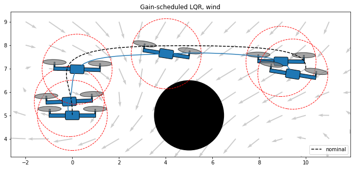
Gain-scheduled LQR in the wind (original weights)
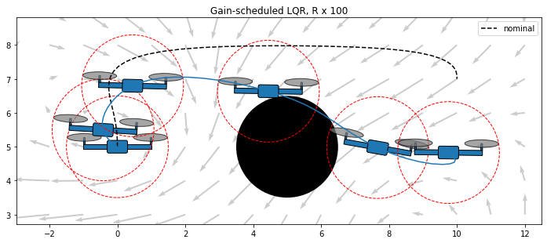
Same controller with the control weight R × 100
Controller
Miss distance
Open loop
8.188 m
Time-indexed LQR
0.603 m
Hover LQR (one single gain)
0.608 m
Nearest-state LQR
10.348 m
Time-indexed LQR, R × 100
2.186 m
Without feedback, the wind pushes the drone 8 m away from its goal; with the time-indexed LQR it stays within 0.6 m. When the control is made 100 times more expensive, the controller only makes small corrections and cannot fight the wind anymore. Interestingly, a single gain computed at hover works nearly as well: along this trajectory the pitch never exceeds 0.33 rad, so cos φ ≈ 1 and sin φ ≈ φ, and the linearized models are almost the same as at hover. Gain scheduling would pay off for more aggressive maneuvers. Choosing the gain of the nearest state instead of the current time fails: the wind pushes the drone back toward earlier states, and it ends up looping between the first indices.
Perception: camera pose, robust estimation and object detection
To navigate, the robot also needs to understand what it sees. In this third part, I worked on the main building blocks of robot perception.
Camera extrinsics from a checkerboard
From the detected corners of a checkerboard and the intrinsic matrix K, I recovered the position and orientation of the camera (R, t) with a homography, then projected the result onto the closest true rotation matrix. The reprojection error is 3.30 px. Scaling the focal lengths by 1.05 reduces it to 1.54 px, which suggests that the given K is slightly off.
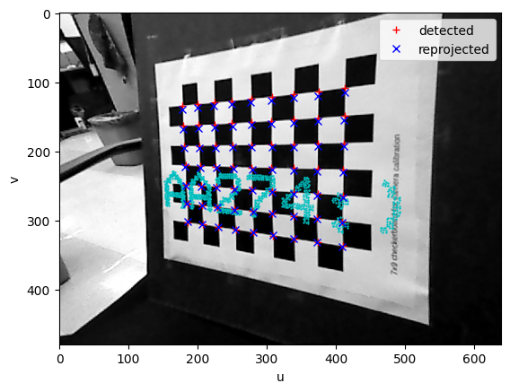
Detected and reprojected corners, with a hidden point cloud projected onto the board
RANSAC
When some point correspondences are wrong, a least-squares fit is ruined because a few outliers weigh a lot in the sum of squared errors. RANSAC repeatedly fits a homography on 4 random correspondences (the minimum, since a homography has 8 degrees of freedom) and keeps the model with the most inliers. With p = 0.99 and an inlier ratio of 0.7, 17 iterations are enough.
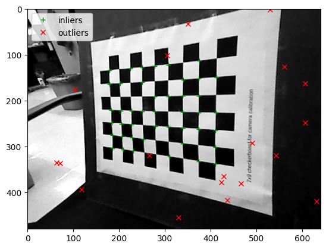
Inliers (green) and outliers (red) found by RANSAC
The rotation error goes from 93.96° with least squares to 0.27° with RANSAC.
Iterative Closest Point (ICP)
ICP aligns a 3D scan onto a model by alternating two steps: matching each point to its nearest neighbor, then computing the best rigid transform (with an SVD).
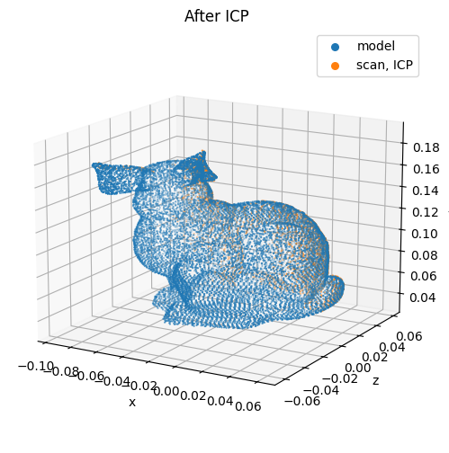
Scan aligned to the model after ICP
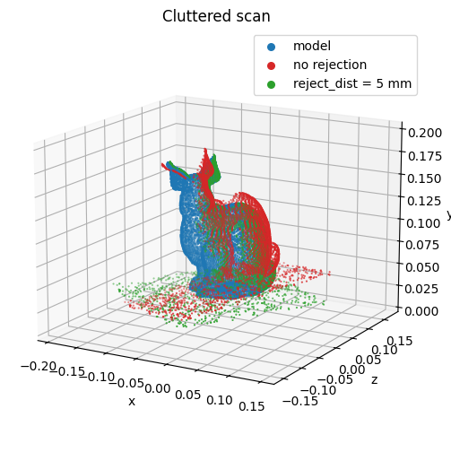
Cluttered scan with and without outlier rejection
Initial offset
Iterations
Rotation error
15°
35
0.05°
30°
43
0.05°
60°
56
0.05°
90°
100
144.68°
120°
78
144.66°
ICP converges well up to 60°, but from 90° the nearest-neighbor matches are wrong and the algorithm gets stuck in a local minimum. When the scan includes the floor, rejecting the matches farther than 5 mm reduces the rotation error from 9.77° to 0.11°.
Evaluating an object detector
Finally, I evaluated a pretrained detector (PyTorch) with precision, recall and average precision (AP), and implemented non-maximum suppression (NMS), which removes the duplicate boxes around the same object.
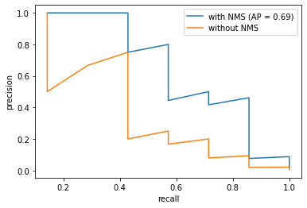
Precision–recall curves for the airplanes of an airport image
Score threshold
Detections
Precision
Recall
0.70
3
1.000
0.429
0.50
5
0.800
0.571
0.30
19
0.316
0.857
0.10
324
0.022
1.000
A lower threshold finds more planes but adds many false detections. NMS raises the AP from 0.438 to 0.693, because without it the duplicate boxes count as false positives. I also ran the detector on a picture of my choice:
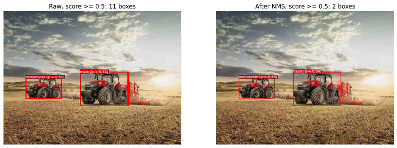
Detections before (left) and after (right) NMS: 11 boxes become 2
The two tractors are found, but labelled as "truck" and "motorcycle" since the detector was trained on a dataset (COCO) with no tractor class, and the seeder behind them is missed. A detector fine-tuned on agricultural machinery would be needed for this kind of application!